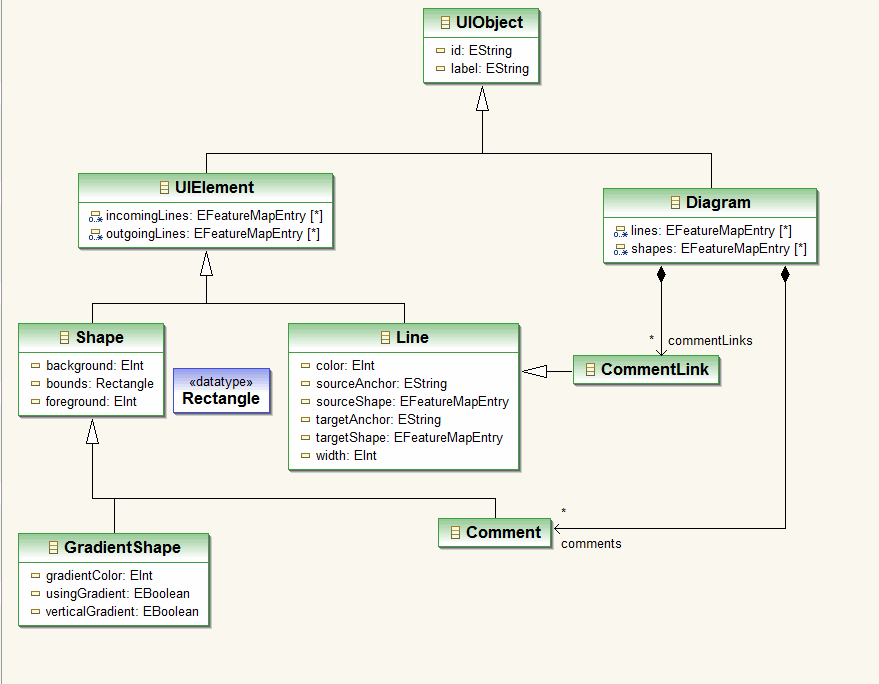
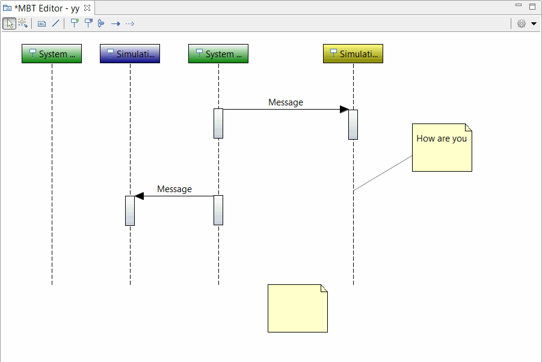

Overview
GEF Graphical Editor provided toolings includes diagram intergration model based on EMF, ToolBar palette diagram editor.
EMF based Diagram Intergration model for Graphical Editor.

Notes:
- 'FeatureMap' and 'http:///org/eclipse/emf/ecore/util/ExtendedMetaData'-> 'group' used when define di models.
- You need to implement them in your real model. For example:
Provided some useful classes for GEF.
- Abstract EditParts and EditPolicies classes based on DI models.
- CommandStack and Commands, combined EMF commands and GEF commands.
- Figures for displaying Label and drawing gradient.
- Text direct edit manager based on a labeled figure.
- Common connection anchor based on a string terminal value.
- ResourcesFactory for managing images, fonts and colors.
Provided a new graphical editor with a ToolBar Palette.
